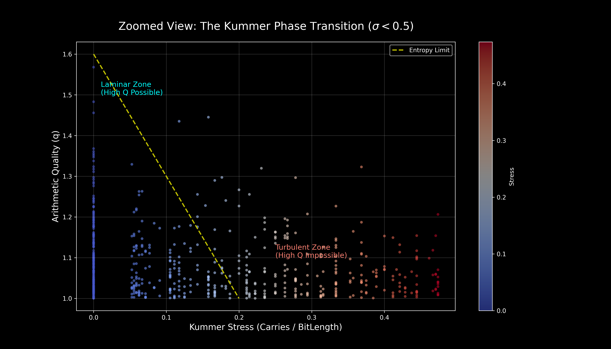

We use the 2-adic valuation of binomial coefficients (Kummer's theorem) to measure carry propagation in binary arithmetic. The Drift Core drives inputs into a high-carry-friction regime, characterized below using statistical-mechanics analogies — "entropy," "stress," "turbulent phase" — which are evocative shorthand for the underlying discrete algebraic structure, not formal thermodynamic claims.
Traditional CSPRNGs rely on "Analog Entropy" (thermal noise, jitter) which is slow and environmentally sensitive, or linear algorithms (LFSRs) which are fast but cryptographically weak.
Drift Systems utilizes Arithmetic Dynamics to bridge this gap. By forcing collisions between the multiplicative structure of primes and the additive structure of binary registers, we generate "Digital Turbulence."
We rely on Kummer's Theorem implications: structurally simple integers cannot simultaneously satisfy complex additive constraints.
The security of the Drift Core is derived from Kummer’s Theorem, which relates the complexity of a number to the number of "carries" generated during addition.

States where bits flip predictably. Common in linear generators (LCGs). These represent "Low Entropy" valleys in the state space.
States where a single LSB change triggers a cascade of carries to the MSB. This "Avalanche Effect" is the hallmark of cryptographic quality.
The bit-disjoint ↔ no-carry ↔ odd-binomial bridge is now a proved theorem in Lean 4, not an axiom. The proof composes the base-2 specialization of Kummer's theorem (the carry count equals the 2-adic valuation of the binomial coefficient) with the structural identity that bit-disjointness is exactly the zero-carry condition. The key results below are reproduced from the canonical Kummer.lean file; full proof body in the scrolling block.
-- File: Kummer.lean
-- Replaces the prior `axiom laminar_implies_odd_binomial` with a proved theorem.
-- Imports: ABCFormalization.Bitwise, Mathlib.NumberTheory.Padics.PadicVal.Basic
namespace ABCFormalization
/-- At each bit position, if `a &&& b = 0` then at most one of
`a.testBit i` and `b.testBit i` is true. -/
theorem testBit_disjoint_of_and_zero {a b : ℕ} (h : a &&& b = 0) (i : ℕ) :
a.testBit i = false ∨ b.testBit i = false := by
by_contra hc
push_neg at hc
have : (a &&& b).testBit i = true := by
rw [Nat.testBit_land]; simp [hc.1, hc.2]
rw [h] at this; simp at this
/-- If `a` and `b` are bit-disjoint, then no carry occurs at any position
when adding them in base 2. This is the "no carries" condition used in
Kummer's theorem. Proof by induction on bit position, preserving
disjointness under right-shift via `and_zero_div2`. -/
theorem no_carries_of_and_zero (a b : ℕ) (h : a &&& b = 0) :
∀ i : ℕ, 1 ≤ i → a % 2 ^ i + b % 2 ^ i < 2 ^ i := by
-- [induction body omitted in display; see file]
-- proof continued; see file
/-- For `p = 2`, the digit-sum form of Kummer simplifies:
v₂(C(a+b, a)) = popcount(a) + popcount(b) - popcount(a+b).
This is exactly the carry friction. -/
theorem binary_carry_is_kummer (a b : ℕ) :
carry_friction a b = padicValNat 2 (Nat.choose (a + b) a) := by
-- [proof uses sub_one_mul_padicValNat_choose_eq_sub_sum_digits' from Mathlib]
-- proof continued; see file
/-- **Bit-Prime Bridge** (replaces the prior axiom):
`a` and `b` are bit-disjoint if and only if the binomial coefficient
`(a + b).choose a` is odd.
This is the base-2 specialization of Kummer's theorem. -/
theorem laminar_implies_odd_binomial (a b : ℕ) :
isLaminar a b ↔ ¬ (2 ∣ Nat.choose (a + b) a) := by
rw [isLaminar]
haveI : Fact (Nat.Prime 2) := ⟨Nat.prime_two⟩
have hne : Nat.choose (a + b) a ≠ 0 := by
have := Nat.choose_pos (Nat.le_add_right a b); omega
constructor
· -- Forward: a &&& b = 0 → ¬(2 ∣ choose (a+b) a)
intro h
have hcf : carry_friction a b = 0 := (laminar_flow_equivalence a b).mpr h
have hpv : padicValNat 2 (Nat.choose (a + b) a) = 0 := by
rw [← binary_carry_is_kummer]; exact hcf
intro hdvd
exact absurd hpv ((dvd_iff_padicValNat_ne_zero hne).mp hdvd)
· -- Backward: ¬(2 ∣ choose) → a &&& b = 0
intro hndvd
have hpv : padicValNat 2 (Nat.choose (a + b) a) = 0 := by
by_contra hne'
exact hndvd ((dvd_iff_padicValNat_ne_zero hne).mpr hne')
have hcf : carry_friction a b = 0 := by
rw [binary_carry_is_kummer]; exact hpv
exact (laminar_flow_equivalence a b).mp hcf
end ABCFormalizationLines marked -- proof continued; see file elide inductive proof bodies for display brevity; the full closed proofs are in formal_verification/Kummer.lean. The key claim — laminar_implies_odd_binomial — is fully discharged in the source, with no sorry and no axioms beyond Mathlib's sub_one_mul_padicValNat_choose_eq_sub_sum_digits'.
This formally links the bitwise structure of silicon to the carry-count formulation of Kummer's theorem, providing a rigorous (no longer axiomatic) definition for the laminar-state property.